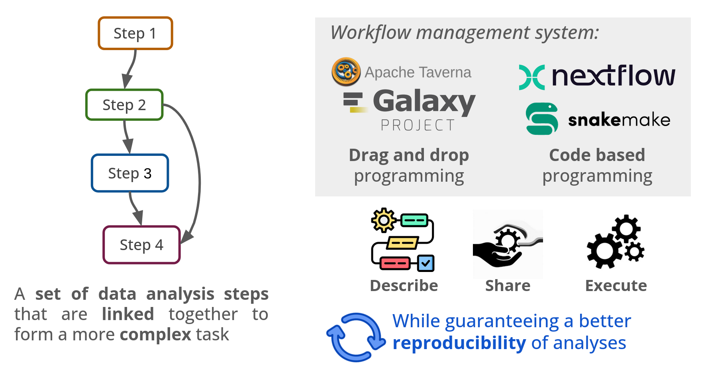

Computational Reproducibility With Scientific Workflows: Analysing viral genomes with Nextflow
An ACM Rep 2025 tutorielUNDER CONSTRUCTION
In an era of generation of large datasets and complex scientific analyses, ensuring the reproducibility of data analyses has become paramount. Workflow management systems have emerged as a key solution to this challenge. By managing:

This tutorial aims at demonstrating the critical role of workflow management systems in implementing reproducible data analyses, with an emphasis on their capacity to encapsulate heterogeneous code, manage software environments, scale with the data size, and leverage heterogeneous computational resources efficiently. To do so, we will use the Nextflow [1] workflow system and a viral genome sequence reconstruction pipeline as a use case. This will demonstrate the fundamentals of Nextflow and illustrate how it can be used to easily implement, execute, and share a simple workflow.
Key learning outcomes include
By the end of the tutorial, participants will have a solid foundation in workflow management systems and be capable of designing and implementing reproducible data analysis workflows, aligning with the broader goals and themes of ACM REP 2025.
Link to the lecture slides can be found here.
The aim of this practical session is to create a Nextflow workflow to analyse a SARS-CoV-2 sequencing dataset. The objectives are:
It consists of:
The resulting workflow should look like this:

First the reference genome needs to be indexed, this steps is important since it allows to accelerate the mapping process. For more information regarding genome indexing see here.
file ref
tuple val(ref.name), file("${ref.baseName}.*")
bwa index ${ref}
The next step is the mapping of the reads to reference genome... (develop this). Read mapping will be performed using bwa mem.
tuple val(name), file(f1), file(f2) tuple val(refName), file(ref)
tuple val(name), file("*.bam"), file("*.bai")
bwa mem -t 1 reference.fa reads1.fq reads2.fq > tmp.sam samtools sort -o sample.bam tmp.sam samtools index sample.bam
Consensus sequence will be inferred also using iVAR. The consensus sequence is a theoretical representative of a nucleotide sequence in which each nucleotide is the one which occurs most frequently at that site in the different sequences. The goal of using a consensus sequence is by using the most frequent nucleotide at each site, the conserved regions are preserved, these being the most functionnaly important. Additionaly, sequencing errors are also neglected (by averaging them out), creating a sequence in which we have more confidence. For more information regarding the consensus sequence see here.
tuple val(name), file(bam), file(bai)
file "${name}.fa"
samtools mpileup -d 600000 -A -Q 0 -F 0 ${bam} | ivar consensus -q 20 -t 0 -m 5 -n N -p ${name}
Viral diversity is often broken down into Clades or lineages which are defined by specific combinations of signature mutations. Clades are groups of related sequences that share a common ancestor. To detect a sequences clade we use 2 different methods Pangolin and NextClade. For more information see here.
Detecting clade (NextClade)
Nextclade assigns sequences to clades by placing the sequences on a phylogenetic tree annotated with clade definitions. More specifically, Nextclade assigns the clade of the nearest reference node found during the Phylogenetic placement step.
path "ncref"
nextclade dataset get --name 'sars-cov-2' --output-dir 'ncref'
path ncref path seq
path "annotations.tsv"
nextclade run --in-order --input-dataset ${ncref} --output-tsv 'annotations.tsv' ${seq}
sed -i 's/\x0D\$//' annotations.tsv
Detecting clade (Pangolin)
Pangolin will assign the most likely lineage out of all currently designated lineages. For more information see here.
file fa path seq
file "*.csv"
PATH=/opt/conda/envs/pangolin/bin/:\$PATH pangolin --usher 'sample_consensus.fa' -t 20 --outfile Pangolin_lineage_report.csv
Here are the list of tools you will need in the workflow with a corresponding container to use them:
| Tool | Container |
|---|---|
| samtools | evolbioinfo/samtools:v1.11 |
| iVAR | evolbioinfo/ivar:v1.3.1 |
| Nextclade | nextstrain/nextclade:3.13.3 |
| Pangolin | evolbioinfo/pangolin:v4.3.1-v1.33-v0.3.19-v0.1.12 |
| bwa | evolbioinfo/bwa:v0.7.17 |
After running the workflow, we can analyse some of its resutls
annotations.tsv, determine what clade has been predicted for the samples?lineage_report.csv, determine what lineage has been predicted for the samples?A link to the correction workflow will be added at the end of the tutoriel.
Link to reproducibility consensus workflow can be found here
Intended Audience
This introductory-level tutorial is targeted at scientists with an informatics background who analyse data in their projects. Participants should have an intermediate level of proficiency in Bash (navigate a terminal, install software, manage dependencies). No prior bioinformatics or biological knowledge is needed.
Format
The tutorial will follow a hybrid format, one instructor will be at the conference, while another will be connected remotely.
Length
The tutorial will last half a day (3 hours).
Special Equipment Needs
Participants will need access to a terminal (Linux or Mac) and should have Apptainer/Docker and Nextflow installed prior to the tutorial, for infromation to install the different software, see here.